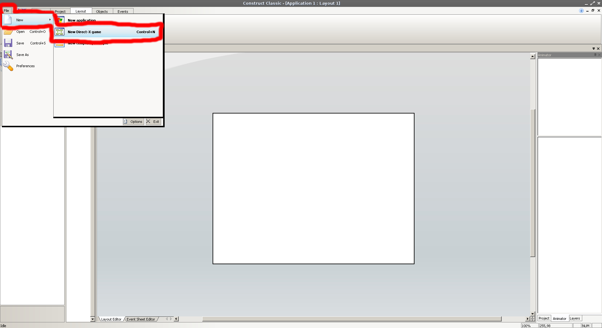
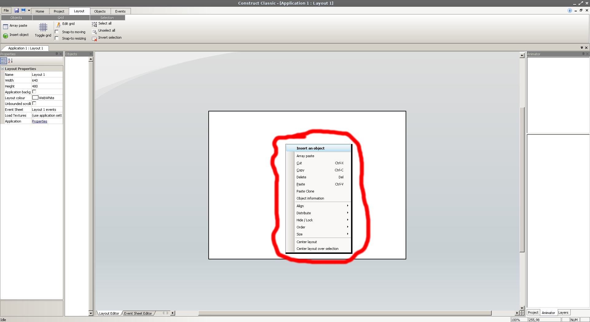
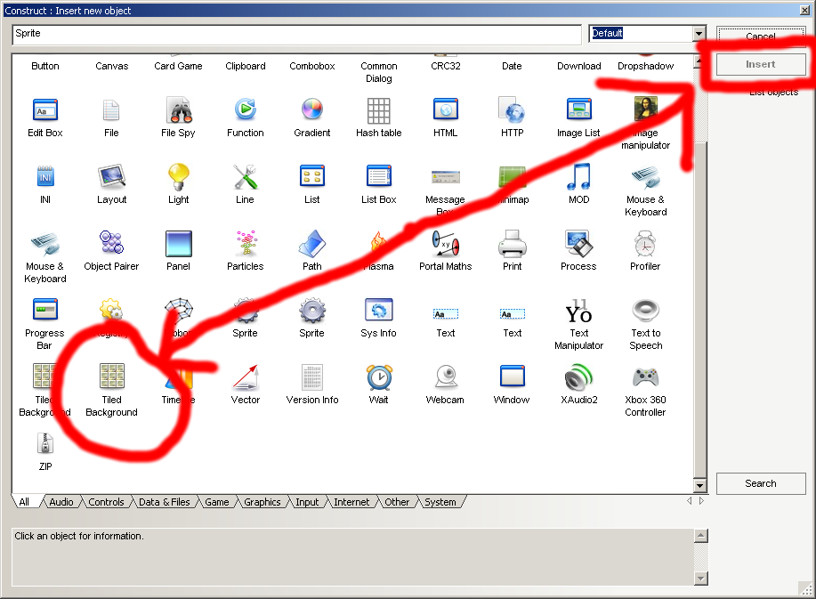
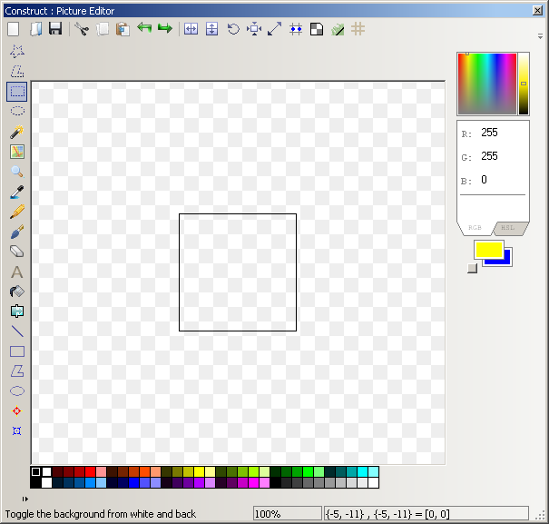
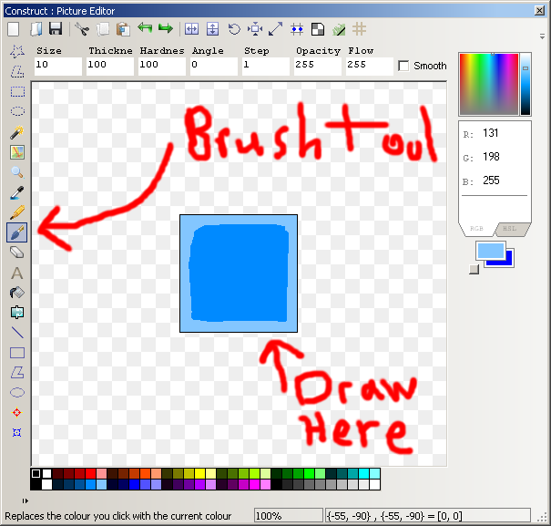
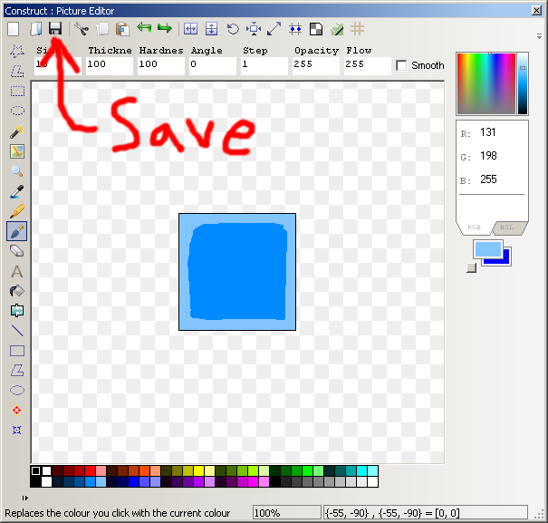
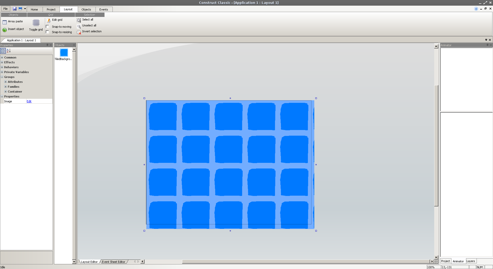
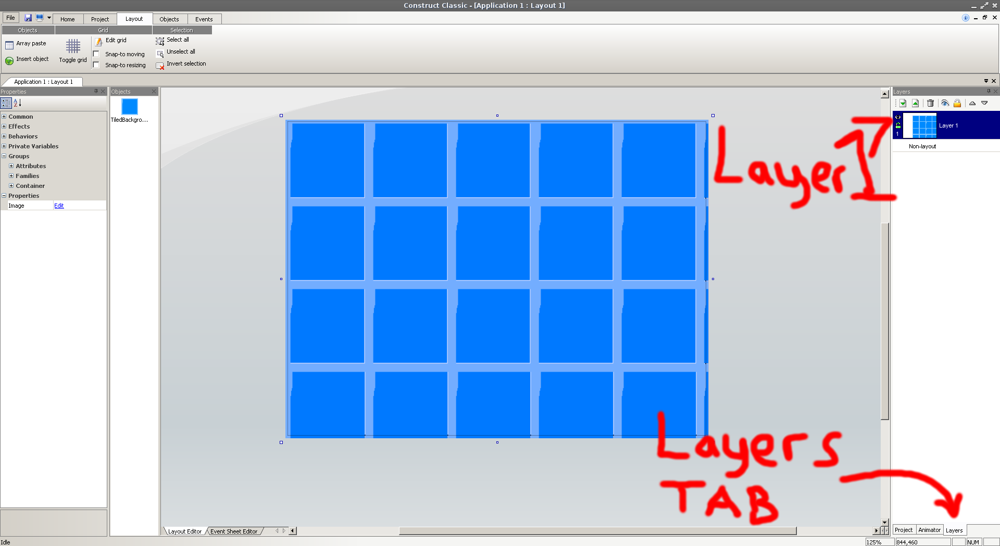

How do I start?
Today we are going to use "Construct Classic" to make our video game, you can download it here. Construct Classic is a cool tool that lets you make a wide variety of video games.
Installing Construct Classic
After downloading the file, run the installer. If you need any help during installation let one of the mentors know.
Making a new Project
Now that Construct is installed lets make a game. Start-up Construct on your computer. First click on "File" in the top left corner of the program, then click "New" and click into "New Direct-X game" ,or you can hit CTRL + N on your keyboard. This creates a new blank game for us to build upon, but lets talk about video game mechanics.
Video Game Mechanics
We are going to be making a '2-dimensional' Video game. These games have a few components we need to be aware of;
- - A Background
- - A Player
- - Some Enemies
Sprites
So before we can make the game, we need at least these three things; a Background, a Player, and some Enemies. These objects are called "Sprites" ,they can be made with any drawing program, like paint. We are going to be making our "Sprites" in the Construct program, but you can draw your's in paint too.
The Background
Lets start with the background, this is the level that is underneath a players' feet. The player and the enemies move over it, it needs to have a simple style, if the style of the background is too complicated then the player will feel distracted (and may even get sick!). First right-click into the white space in the middle of the screen, then select "Insert an object".
A new window will pop up called "Construct : Insert new object". This window contains everything you can insert into a project, don't worry we are not going to cover all this junk today. We just want to insert a background for now, within this window find "Tiled Background" then click "Insert" at the top-right of the window.
The window will close, and you will be back to the main window. Your cursor will change to a big plus mark "+" click anywhere in the white space to insert the background.
This new window is the sprite editor, here is where we are going to make our tiled background. You can begin drawing with the tools at the left, I am using the brush tool. Remember - don't choose colors that are too crazy, or you might get sick! I recommend choosing a light blue.
The reason we don't color a solid block of color is because this is a Tiled Background, if it was all one color then the player would not be able to tell where they were going, so put a lining around the block near the edges.
When your sprite is done, hit "Save" at the top left corner. Save this file somewhere on your computer, I recommend saving it to the Desktop folder.

Now that it is saved somewhere safe, close out of the editing window (If it asks you to save again, hit "Save"). You should see one tile in the middle of the screen, make the tile fill the screen by dragging the squares in the corners of the tile.
Your background should look something like this, we are almost done adding it, and are almost ready to start adding a player and enemies. (Ask a mentor if you need any help)
Now we are going to view our current "Layers" , our game is like a cake; we have the background layer on the bottom, our player and enemy layers above that in the middle, and cool special effects on the top. We are going to be working with players and enemies after this point, so we do not need to work with the background layer. To keep the layer from moving around we are going to "Lock" it using the layers tab. The Layers tab is near the bottom right corner of the screen, next to the "Animator" tab and the "Project" Tab.
- 1. Once you find it click into it.
- 2. Near the top right is where our layers are, and by the end of this tutorial our game is going to have about 3 layers. Click on "Layer 1" near the top.
- 3. Then click the tiny Lock Symbol next to it on the left. (The lock symbol should turn grey)
- 4. The eyeball symbol makes the layer invisible, if we ever need to make the background go away we can click it. For now we will leave the eyeball alone.
- 5. After the layer has been locked try to move it, as you can see there is no way to further edit the layer, keeping it safe.
The boring part is over :)
We have successfully added our background layer, now we can work with the fun stuff; the players, enemies, and special effects.
A New Layer
Before we make any more objects we should define some new layers. All we have is the Background Layer, which is still called layer 1.
- 1. Go to the Layers tab.
- 2. As you can see it is still called "Layer 1" , select the Layer.
- 3. On the left hand side you will see a "Layer Properties" window, change the Name value from "Layer 1" to "Background".
- (Ask a menor if you need help)
Now that we have our Background Layer we will make a Player Layer.
- 1. While in the Layers Tab, click the symbol that looks like a little up arrow on a peice of paper. (It looks like this - )
- 2. Another Layer should pop up named "Layer 2" , rename this layer to "Players and Enemies".
The Player
Whats a game if nobody can play it? Lets add a player; remember, the player and the enemies are "Sprites" , sprites are like our background, we have to draw them and then add them to the game. (Before following the steps below, make sure you are in the "Players and Enemies" Layer)
- 1. Right-Click somewhere on the locked background, then click "Insert an object".
- 2. Navigate through the menu for "Sprite", then click Insert at the top right.
- 3. Click anywhere within the background.
- 4. Now the editor should be up and we can draw our player.
In the editor I am using the bucket tool, with the color yellow. I chose yellow because it will pop out well with the blue, if the players color is too similar to the background then they might get lost!
- 1. Pick a good player color.
- 2. Fill in the square with the bucket tool.
Right now our player is pretty big, so we need to make it smaller.
- 1. Click the "Resize" tool near the top of the window.(It looks like a line with two arrow-heads)
- 3. Change the values to 15 by 15, then click "Resize".
- 4. Save and exit the picture editor.
The player sprite is still called sprite, we will need to change it's name.
- 1. On the left hand side of the screen you will see a panel called "Objects" , in this panel you can see our "TiledBackground" object and another object called "Sprite" , click on Sprite.
- 2. Next to the Objects panel is another panel called "Properties" , within this panel is where all the cool stuff happens! This is where we will define our player and enemy properties. There are a few tabs within the panel; Common, Effects, Behaviors, Private Variables, Groups, Properties, Appearance, and Angle. We just want to focus on the Common Tab.
- 3. Open up the common tab by clicking the plus symbol + next to it, if it is open already a minus symbol - will appear next to it.
- 4. Within the Common tab is a few options, we are going to change the value at the top called "Name" , change it from "Sprite" to "Player" .
- 5. Minimize the Common Tab, then open up the "Behaviors" Tab.
Player Behaviors
Now we are going to add some behaviors to the player, and we will be able to test our game out!
- 1. Open the Behaviors tab.
- 2. Click "Add" next to "New Behavior".
- 3. A new window will pop up called "Construct : New Behavior" , click "8 Direction" then click "Insert"
The 8-Direction Behavior allows the player to move around with the arrow keys.
Testing the Game
Lets test what we have so far;
- 1. All the way near the top of the main window, click the tab labled "Project".
- 2. Within this tab, click the "Run all" button.
You should be able to move the player around with the arrow keys.
Enemies
Right now our player does not have any kind of threat, lets add some enemies. So far we have been doing alot of work with the mouse, but we are going to begin coding logic to our game. Since our Enemies are not controlled by another player, we need to give them some AI - Artificial Intelligence.
Lets start by drawing our enemies
- 1. Right-click anywhere in the tiled background (Make sure you are in the Players and Enemies Layer).
- 2. Click "Insert and object".
- 3. Click Sprite, then click insert on the top right.
- 4. Color the enemy all red, and resize them to 15 by 15 pixels (Ask a mentor if you need any help).
- 5. Save and exit the editor.
- 6. Like we did with the player sprite, rename the red sprite "RedEnemy".
Enemy AI
Now we will begin coding the logic, and showing you around the "Event Viewer".
- 1. Near the bottom of the screen is a tab called "Event Sheet Editor", this is where all of our logic will be coded, click and open this tab.
- 2. Right Click to begin, and hit "Insert event".
- 3. Select the Red Enemy object, and hit Next.
- 4. Click "On collision with another object" and hit next.
- 5. In the middle of the screen is a button that says "Pick an Object" , click it, then click the Player object and hit OK.
- 6. Hit Finish
- 7. You will see a new event has been added, click "New action" to the right of the event.
- 8. Click the Player object and hit Next.
- 9. Within this menu, select "Destroy".
- 10. Click Finish, and test out your game.
You should see a stationary enemy, and when you come into contact with them the player is destroyed! Our enemy doesn't do much though, lets make him follow the player around the map.